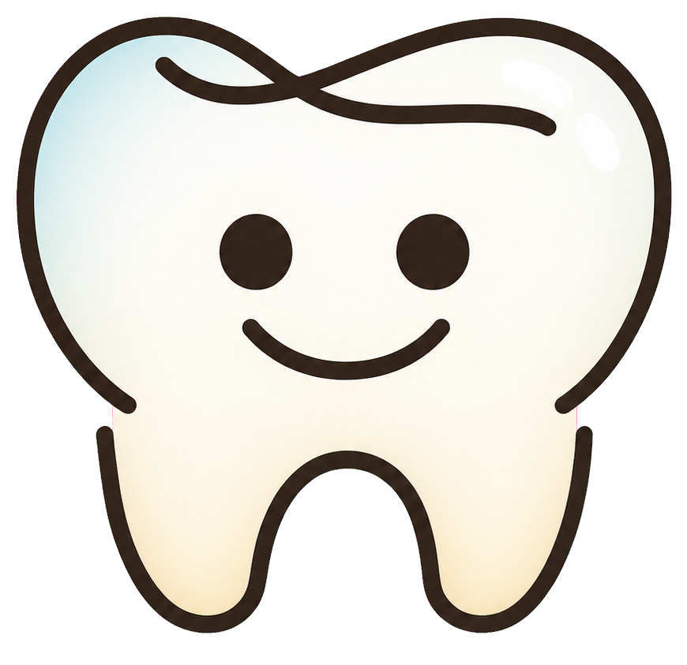

模型策略、医疗边界、账户额度和调用审计集中在这里。API Key 只保存在服务器环境文件中。
CAPTURE REFERENCE LIBRARY
七视图采集参考图
管理七个口腔区域的21张距离对照照片、发布版本和当前启用状态。
API Key检查中
兼容接口检查中
图片签名域名检查中
CALL AUDIT
调用日志
| 时间 | 操作 | 模型 | 账户 | 状态 | Token | 耗时 | 请求ID / 错误 |
|---|---|---|---|---|---|---|---|
| 正在读取日志… | |||||||
1 / 1

齿镜DentiScope模型策略、医疗边界、账户额度和调用审计集中在这里。API Key 只保存在服务器环境文件中。
CAPTURE REFERENCE LIBRARY
管理七个口腔区域的21张距离对照照片、发布版本和当前启用状态。
CALL AUDIT
| 时间 | 操作 | 模型 | 账户 | 状态 | Token | 耗时 | 请求ID / 错误 |
|---|---|---|---|---|---|---|---|
| 正在读取日志… | |||||||